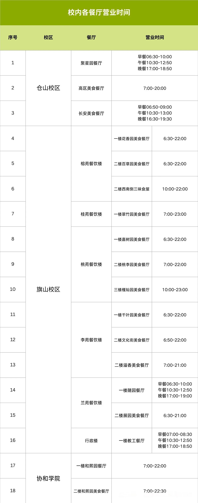

校园餐饮
校内及周边伙食/餐厅情况
前言
干饭人，干饭魂，干饭都是人上人，干饭都要带个盆。
干饭不狠，枉为人。吃饭不积极， 思想有问题~
（仅列举部分档口，有遗漏。好不好吃需要自己去评鉴哈~）
校内各餐厅营业时间

旗山校区
本区域靠近李苑、桃苑。此部分修订于 2025 年 9 月 14 日。
散装
京东小店、街头馋嘴量贩零食、瑞幸咖啡（文化街入口靠嘉树园餐厅一侧）
芒果优选生活超市（文化街尽头）
心语面包、库迪咖啡（超市靠桃苑一侧的门旁）
千叶园美食餐厅
面夫子、六合云厨面馆、墨西哥辣拌饭、状元侠叉烧饭、南洋炒饭、徽派盖浇饭、伊樂拉面、百味佳自选快餐、港式煨汤、食光记·鱼蛙舍、食光记·品膳快餐、饺饺者手工饺子、永德鑫自助餐（量贩自助）、西北风味兰州拉面、沙县小吃、西式扒饭、一碗咖喱、火烧云下饭砂锅菜、莆仙小吃、朱家小馆羊肉面羊杂面、韩石记石锅饭、鑫友福麻辣烫、巴思克蛋糕·面包、霸王茶姬、肯德基、古茗、潮汕粥铺
溢香美食餐厅（千叶园餐厅楼上）
周记麻辣烫·麻辣香锅、牛小贰原汤牛肉面、聚贤套餐饭、张记石磨肠粉、佳佳香鲜烫牛肉粉、∞号汤粉·潮汕汤粉王
文化街美食餐厅（千叶园餐厅楼上）
0090 汉堡工厂、云南小锅米线、林真棒卤味饭、烧腊仙·港式烧鸭饭、猪角·猪脚饭大王、津五爷大块牛肉饭、北方手工饺子、张记饸饹面、京元自选食堂、烧腊仙·京兆刘福记、杨国福麻辣烫、川湘瓦缸炖肉、贵州羊肉粉、赣湘小厨、元气锅盔、京元饭堂·舒食自助、一点点（奶茶）、茶香鸡米饭、小街胡同牛杂面、沙县小吃、咕嘟花小甲花甲粉面、玛格利塔披萨
本区域靠近桂苑、桃苑。此部分修订于 2025 年 9 月 14 日。
嘉树园餐厅（1 楼）
自选食堂 （含三素一荤 5 元营养餐）、益禾堂、友佳烘焙、赛百味、雀玲珑中国炸鸡、匠心卤热卤拌饭、小食光套餐饭、香村瓦罐、旺旺客家牛肉面、北方手工水饺、蒙自源米线、正粤营养糖水粥、沙县美食、潮腊、卤天下、馋小玥麻辣烫、赣味小炒、重庆面馆
桃李园餐厅（2 楼）
延妈妈朝鲜族石锅拌饭、豫味北方烤饼、赣味田园自选大餐、缘味先石锅饭、肥佬烧腊、虾仁捞饭、叁餐台式黑金卤肉饭、林记牛羊双粉铺、国燕现蒸凉皮、沙县小吃、麻辣烫·麻辣香锅、泼金记爆炒浇头面、五谷渔粉、巢南之、ZOONANA 首尔炸鸡
槿灿园餐厅（3 楼，原名桃苑美食餐厅）
禧匠（江西风味小炒）、闽南小吃、经典牛排·铁板板、好煨道瓦罐套餐、赣湘木桶饭、烤肉饭·脆皮鸡饭、麻辣香锅·麻辣烫、锡纸花甲粉、重庆小面、江西烧烤、食语轩自助餐（量贩自助，1.98 元/50克）、安泰楼酒家
本区域靠近桂苑、榕苑。此部分修订于 2025 年 9 月 14 日。
翠竹园餐厅（共青团广场旁）
塔斯汀中国汉堡、蜜雪冰城、老上海肠粉馄饨、爱米渔粗粮·渔粉、正宗隆江猪脚饭、蒸佰味、西安大碗面、回洋號沙茶面、麺大厨蜀味记、沙小二醉沙县、小哥瓦罐、小湘菜精品套餐、张记港式烧腊、美而美原切牛排、小厨扒饭、江西牛骨粉、好又饱·食尚快餐、临榆炸鸡腿、田阿婆麻辣烫、果汁源鲜榨果汁
天兴教育超市（翠竹园餐厅楼上）
心语面包、豪客吉汉堡、瑞幸咖啡
本区域靠近榕苑，标识：麦当劳 WiFi 字样。此部分修订于 2025 年 9 月 14 日。
花香园餐厅（1 楼）
茶百道、高八斗套餐饭、美侍郎瓦香鸡、台美味黑金卤肉饭、汤居仕瓦罐煨汤、食光记·品膳快餐、三沁园套餐饭、江晓笼现蒸小笼包、食惠自选食堂、面夫子、小鲜肉手工水饺、渝巷里重庆小面、赣湘小厨、豫味拉面、沙县美食、云尚云南小锅米线、馋小玥麻辣烫、现擀汉堡、河林鸿老鸭粉丝、梦鲜味花溪牛肉粉、糖克拉手作面包
百草园餐厅（2 楼）
麦当劳、库迪咖啡、雨佳烧烤（凌晨营业可外卖）、梦想咖喱、福记麻辣烫、魔肶鸡腿饭、赣湘小炒、东福兴港式烧腊、尚味简餐、香熏鸭仔面、富榕瓦罐煨汤、旺比包子、米婆婆、淳百味、百草高汤粉面、百草羊肉粉面、旺旺客家牛肉面、螺当铺螺狮粉、港式扒饭、蜀合记·成都担担面、谷膳·闽味台湾卤肉饭、东方匠作中国汉堡
本区域位于西门外，靠近桂苑、榕苑。
小吃街：蜜雪冰城、一点点（奶茶）、古茗、陈文鼎（奶茶）、片皮鸭、张亮麻辣烫 等 荷塘名郡：赵一鸣零食
本区域位于行政楼小卖部旁边。 自选食堂（午餐时段仅限教职工用餐，晚餐时段允许学生用餐）
本区域位于音乐学院往南方向对面。
随园餐厅（1 楼）
自选食堂 （含三素一荤 5 元营养餐）、心语面包、量贩自助（仅午餐）
展园餐厅（2 楼）
肯德基小站餐厅、乡外乡套餐饭、咖喱饱饱、鲜炖速食铺、金日升烤盘饭、蔡叔炸鸡烤肉饭、福记麻辣烫、星巴克、永兴发港式餐厅、莆仙风味馆、营养早餐、食膳简餐、食堂哥牛肉饭、赣味小炒、莫小喃自选水饺、益禾堂、犇犇客家牛肉面、淳百味、重庆面馆、稻香缘渔粉、西北拉面、煮飞的鸡·云南鸡汤米线、喜姐炸串、嘿贝野烘焙轻食
星雨湖（人文楼旁边）
711 便利店、瑞幸咖啡、蜜雪冰城
本区域从南门出门后要再步行 700m 左右（出门左转直走到达红绿灯后右转直走）。
正荣财富中心属于商圈，该范围内的外卖也无法送进校内（标注校园送的除外，见外卖送到哪里（旗山校区））。
奶茶咖啡：KOI、星巴克、霸王茶姬、瑞幸咖啡、爷爷不泡茶、一点点、蜜雪冰城、古茗、喜茶、茉莉奶白、陈文鼎、唐沫茶兮 汉堡披萨：塔斯汀、麦当劳、华莱士 等 炸鸡炸串：喜姐炸串、正新鸡排 等 其它：醉得意、凡塔斯牛排、星财记香港冰室·茶餐厅、哈哈碳都、小叫天、绝味鸭脖、蜀都丰、周麻婆、大丰收、张亮麻辣烫、草本汤 等
仓山校区
注释
@羽毛 倾情提供了 仓山の吃.pdf，比较具体地介绍了仓山校区内及周边的饮食情况，有需要的可以自行查阅。
部分食堂/餐厅/店面
- 聚星园餐厅（1 楼）：自选食堂 （含三素一荤 5 元营养餐）
- 高区食堂（聚星园 2 楼）：五谷鱼粉、兰州拉面、小锅米线、水煮肉片、水饺、麻辣烫、炖罐、谷物蒸饭
- 长安山餐厅：雀玲珑、淳百味、渔家傲、烤盘饭、木桶饭、麻辣烫、漳州鸭香面
- 校门口（校外） ：华莱士（全国首店）、味莱餐厅（华莱士子品牌）、包笼仙、沙县小吃、广东肠粉等
- 学生街（校外） ：沪上阿姨、霸王茶姬、喜茶、古茗、蜜雪冰城、一点点、正新鸡排等
食堂人流量分析
"食堂人流量分析"是由学校网络与数据中心、后勤服务集团共同推出的服务，供全体学生及教职工开放使用。系统通过 AI 摄像头实时测算食堂进出口人流量，结合内部环境信息，精准统计当前就餐人数及拥挤程度。
入口：福Star APP - 公共服务 - 食堂人流量分析，进入页面后即可查看各个食堂的实时人流量数据和拥挤程度。点击查看详情，还可查看食堂面积、座位数、人数走势图数据。
本服务需要连接校园网才能使用。未购买校园网的可以参考 校园 VPN 服务。
外卖
点外卖的方式
校内点外卖主要通过美团、饿了么、美团拼好饭、京东外卖等。外卖种类齐全。
多多买菜、美团优选目前校内有商家做免费配送，次日内送到宿舍楼下，朴朴则只能送到学校门口（同外卖）。
备注
@Xuuyuan：欢迎加入【星雨湖大饭堂】：823202137，这是由贴吧群再分出来的分享拼好饭、外卖等的群。
@岚：关于外卖选取，建议您参考该商家的食品安全等级公示信息（如果有的话），一般可以中长期选取大于 C 级的店铺。而 C 级只建议偶尔食用。除非实际观看过线下店面，强烈不推荐点 炒饭、烤肉等重灾食品。可能造成的影响包括不限于过敏（局部水肿）、肠胃不适等。另外，较多外卖商家（以及学校食堂店铺）会随餐赠送一些 相同生产商 的饮料如冰红茶等。它们的特点是不可靠的产品信息与同质的廉价性（例如，营养成分表写着碳水化合物 0g/100ml，然而实际口感普遍为高糖(>5g)），建议您不要饮用。
外卖送到哪里
- 校内餐厅的外卖都可以送到宿舍楼下或教学楼楼下（注意标注几号门）.
- 校外的外卖需要看是否有标注（标记为商家自配送的一般都送宿舍楼下），送不到宿舍楼下的外卖会根据地址、情况等的不同而送到西门门口/南门栏杆/小东门门口/小东门附近宿舍栏杆等地。西门、桃苑、小东门、兰苑 6 号楼附近安装有美团外卖柜，也可能送到这边。
- 对于校内外卖，在宿舍门禁时间后还有营业的，外卖员会把外卖通过吊餐的方式送到宿舍的 2 楼（商家在下单页面会写明支持吊餐、吊餐的时间）。
提示
- 小东门在外卖上显示的地址为北 1 门。
- 吊餐，即为配送员通过长杆将外卖直接吊到宿舍楼 1 层走廊（底层为架空层）以避开宿舍楼门禁导致的无法取餐的问题。
- 饿了么平台有标注【校园送】的可以选择送至校内，由校外骑手交接给校内配送团队送餐。
校门口有外卖柜，支持校外外卖；校内外卖一般送至宿舍楼下外卖架，部分校内奶茶店可以配送至教学楼。可通过朴朴、淘菜菜等购买水果，统一配送至月亮湾食杂店。
如何保证配送时效
校内外卖统一由配送团队进行配送，所以无法保证送达时间。若遇到下雨天等天气，外卖可能会延迟。一般情况下，外卖送达以收到云喇叭的短信或电话为准，联系骑手也需要通过云喇叭的短信中的电话。
通过微信小程序【云喇叭】绑定手机号后可以实时查询外卖订单的店家、下单时间、下单编号、送餐情况（分为已下单、已装箱、已送达）及骑手电话。
关于偷外卖
学校常年有 偷外卖/骑手送错地址 等的情况发生，建议外卖送到后及时取餐。
校内配送的外卖在一定时间内丢餐包赔付。云喇叭发送的短信中会包含配送站电话，出现丢餐情况请直接联系配送站，若联系不上配送站再通过平台联系商家。通过平台联系骑手是联系不上的。
详细菜单
旗山校区
千叶园
伊樂拉面
- 店长推荐系列
正餐20元 - 豚骨拉面系列
正餐18元 - 地狱系列
正餐22元 - 乌冬面系列
正餐22元 - 套餐定食系列
正餐24元 - 蛋包饭系列
正餐20元 - 咖喱饭系列
正餐20元 - 丼饭系列
正餐20元 - 一品料理系列
正餐10元
肯德基
- 滑蛋乳酪吐司系列三件套
早餐18元 - 滑蛋乳酪吐司系列两件套
早餐9元 - 帕尼尼系列三件套
早餐18元 - 帕尼尼系列两件套
早餐9元 - 粥系列三件套
早餐13元 - 粥系列两件套
早餐7元 - 大饼系列三件套
早餐23元 - 大饼系列两件套
早餐12元 - 法风烧饼系列三件套
早餐20元 - 法风烧饼系列两件套
早餐10元 - 菜包系列三件套
早餐16元 - 菜包系列两件套
早餐7元 - 单人早餐随心配
早餐26元 - 活力全餐随心配
早餐26元 - OK三件套
正餐24.9元 - 大神卡专享系列
正餐25.9元 - 人气餐随心配
正餐34元 - 全鸡
正餐夜宵29.9元 - 鸡架系列
夜宵30元 - 串串系列
夜宵25元
溢香
文化街
嘉树园
桃李园
槿灿园
翠竹园
西安大碗面
- 陕北风味系列
正餐15元 - 经典干拌面系列
正餐13元 - 油泼系列
正餐15元 - 特色套餐拌饭系列
正餐13元 - 汤面系列
正餐13元 - 武汉热干面系列
正餐14元 - 特色小吃系列
正餐10元
花香园
百草园
麦当劳
- 麦满分套餐系列
早餐13元 - 麦满分组合系列
早餐9.9元 - 叠叠卷套餐系列
早餐11元 - 炒双蛋堡套餐系列
早餐14元 - 炒双蛋堡组合系列
早餐11元 - 营养卷套餐系列
早餐13元 - 营养卷组合系列
早餐11元 - 大堡口福系列
正餐22.9元 - 精选单人餐系列
正餐31元 - 鸡肉汉堡四件套
正餐27元 - 巨无霸牛肉鱼堡系列
正餐33元 - 安格斯牛堡系列
正餐40元 - 随心配1+1
正餐13.9元
随园
展园
肯德基小站餐厅
- 滑蛋乳酪吐司系列三件套
早餐18元 - 滑蛋乳酪吐司系列两件套
早餐9元 - 帕尼尼系列三件套
早餐18元 - 帕尼尼系列两件套
早餐9元 - 粥系列三件套
早餐13元 - 粥系列两件套
早餐7元 - 单人早餐随心配
早餐26元 - 小食两件随心配
早餐6元 - 大神卡专享系列
正餐25元 - OK单人餐系列
正餐25元 - 小站特惠套餐
正餐19.9元